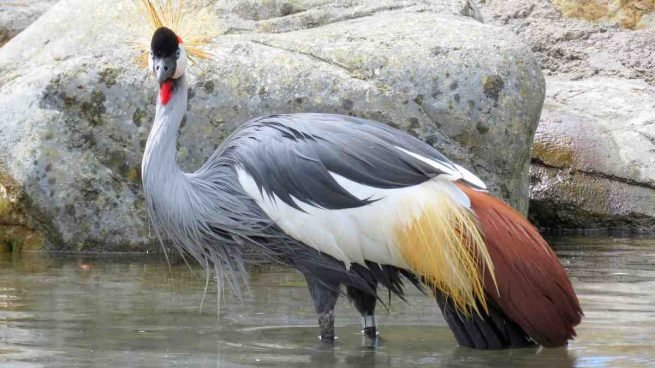

(Balearica Regulorum)
La grulla coronada cuelligrís (Balearica regulorum) es un ave gruiforme de la familia Gruidae. Habita comúnmente en la sabana africana al sur del Sahara, aunque suele anidar en hábitats más húmedos. Son aves no migratorias y gregarias, pero cuando llega la época de cría se separan y buscan su pareja, que será la misma durante toda su vida.Durante la noche duermen en los árboles, evitando de esta manera el ataque de los depredadores.
1.Los sexos son iguales, excepto que los machos son algo más grandes. 2. La grulla coronada cuelligris es una grulla pequeña, con una altura de 100-110 cm. 3. La grulla coronada gris se alimentan sobre todo de las puntas de las hierbas, semillas, insectos y otros invertebrados, y vertebrados pequeños. También forrajea en tierras cultivadas en búsqueda de cacahuetes, soja, maíz y mijo. 4. Una nidada normal consiste de dos huevos claros de color azul pálido, que se incuban durante 28-35 días. Las crías tienen un plumaje de color marrón rojizo a grisáceo. 5. La grulla coronada de vez en cuando se posa en los árboles, una característica raramente vista en otras grullas.